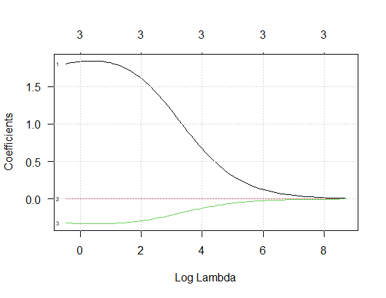
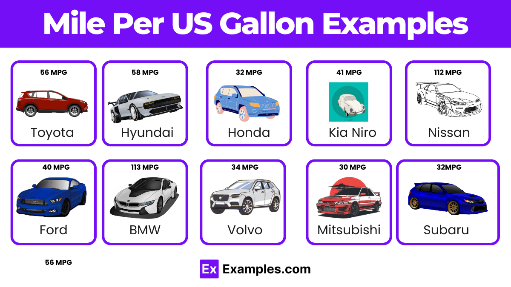
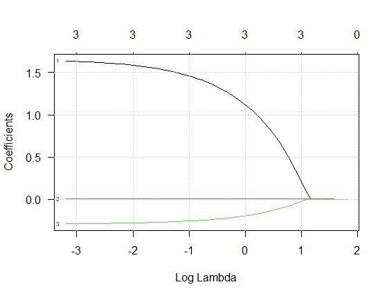
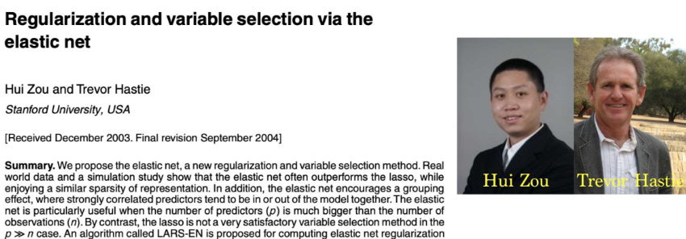

2 Regularización
En esta sección se presentan las técnicas de regularización ampliamente utilizadas en regresión: Ridge y Lasso. Ambas buscan mejorar la capacidad predictiva del modelo penalizando la magnitud de los coeficientes.
Se utilizará la base de datos mtcars de R, considerando como máximo 4 variables predictoras.
Regresión de mínimos cuadrados
El principio de mínimos cuadrados proporciona una forma de elegir los coeficientes de manera eficiente, minimizando la suma de los errores al cuadrado. Es decir, elegimos los valores de \(\beta_{0}, \beta_{1},...\beta_{p}\) que minimizan
\[ RSS =\sum_{i=1}^{n}\left( y_{i}-\beta_0 - \sum_{j=1}^p \beta_j x_{ij} \right)^2 \]
Regresión Ridge
La regresión Ridge es muy similar a la regresión por mínimos cuadrados, excepto que los coeficientes son estimados minimizando una cantidad ligeramente diferente. En particular, las estimaciones de los coeficientes de regresión Ridge, \(\hat{\beta}^{R}\), son los valores que minimizan
\[ \sum_{i=1}^{n}\left( y_{i}-\beta_0 - \sum_{j=1}^p \beta_j x_{ij} \right)^2 + \lambda \sum_{j=1}^p \beta_{j}^{2} = RSS + \lambda \sum_{j=1}^p \beta_{j}^{2} \]
donde \(\lambda \geq 0\) es un \(\color{red}{\text {parámetro de ajuste}}\), el cual debe determinarse por separado, y \(\lambda \sum_{j=1}^p \beta_{j}^{2}\) se denomina una \(\color{red}{\text {penalización de contracción}}\) (shrinkage penalty).
Note que en la ecuación, la penalización de contracción se aplica a \(\beta_1,..., \beta_p\), pero no al intercepto \(\beta_0\).
En la siguiente figura se ilustra lo que sucede con los parámetros a medida que aumenta \(\log(\lambda)\):

Ventajas
- Reduce la varianza del modelo.
- Funciona bien cuando hay multicolinealidad.
- Estabiliza estimaciones.
Desventajas
- No realiza selección de variables.
- Todos los predictores permanecen en el modelo.
Para ajustar un modelo de regresión Ridge se usa la siguiente función del paquete glmnet de Beygelzimer et al. (2024):
glmnet(
x,
y,
family = c("gaussian", "binomial", "poisson", "multinomial", "cox", "mgaussian"),
weights = NULL,
offset = NULL,
alpha = 1,
nlambda = 100,
lambda.min.ratio = ifelse(nobs < nvars, 0.01, 1e-04),
lambda = NULL,
standardize = TRUE,
intercept = TRUE,
thresh = 1e-07,
dfmax = nvars + 1,
pmax = min(dfmax * 2 + 20, nvars),
exclude = NULL,
penalty.factor = rep(1, nvars),
lower.limits = -Inf,
upper.limits = Inf,
maxit = 1e+05,
type.gaussian = ifelse(nvars < 500, "covariance", "naive"),
type.logistic = c("Newton", "modified.Newton"),
standardize.response = FALSE,
type.multinomial = c("ungrouped", "grouped"),
relax = FALSE,
trace.it = 0,
...
)Ejemplo de regresión Ridge
Vamos a usar la base de datos mtcars para predecir el rendimiento de combustible mpg en función de las covariables wt (peso), hp (caballos de fuerez), disp (volumen del motor) y cyl (número cilindros). El objetivo es construir un modelo de regresión Ridge para hacer la predicción.

## Loading required package: Matrix## Loaded glmnet 4.1-10# Datos
data(mtcars)
X <- as.matrix(mtcars[, c("wt", "hp", "disp", "cyl")])
y <- mtcars$mpg
# Cross-validación para lambda
set.seed(123)
cv_ridge <- cv.glmnet(X, y, alpha = 0)
lambda_opt <- cv_ridge$lambda.min
lambda_opt## [1] 0.5146981## 5 x 1 sparse Matrix of class "dgCMatrix"
## s0
## (Intercept) 37.697928462
## wt -2.731682680
## hp -0.018162572
## disp -0.001960048
## cyl -0.921591797Usando el modelo modelo_ridge ajustado, predecir el valor de la variable respuesta mpg usando los datos nuevos que se muestran a continuación:
# Nuevas observaciones
nuevos <- matrix(c(3.0, 110, 200, 6,
2.5, 95, 160, 4,
3.2, 130, 220, 8), nrow = 3, byrow = TRUE)
colnames(nuevos) <- c("wt", "hp", "disp", "cyl")
nuevos## wt hp disp cyl
## [1,] 3.0 110 200 6
## [2,] 2.5 95 160 4
## [3,] 3.2 130 220 8## s0
## [1,] 21.58344
## [2,] 25.14330
## [3,] 18.79146Regresión Lasso
Lasso (least absolute shrinkage and selection operator) es una alternativa a la regresión Ridge que supera la desventaja de incluir los \(p\) predictores en el modelo final. Los coeficientes lasso, \(\beta_{\lambda}^{L}\), minimizan la cantidad
\[ \sum_{i=1}^{n}\left( y_{i}-\beta_0 - \sum_{j=1}^p \beta_j x_{ij} \right)^2 + \lambda \sum_{j=1}^p |\beta_{j}| = RSS + \lambda \sum_{j=1}^p |\beta_{j}| \]
The lasso uses an \(l_1\) (pronounced “ell 1”) penalty instead of an \(l_2\) penalty. The \(l_1\) norm of a coefficient vector \(\beta\) is given by \(||\beta||_{1} = \sum |\beta_j|\).
The \(l_1\) penalty has the effect of forcing some of the coefficient estimates to be exactly equal to zero when the tuning parameter \(\lambda\) is sufficiently large.
En la siguiente figura se ilustra lo que sucede con los parámetros a medida que aumenta \(\log(\lambda)\):

Ventajas
- Realiza selección automática de variables.
- Puede llevar coeficientes exactamente a cero.
- Genera modelos más interpretables.
Desventajas
- Puede ser inestable si hay alta correlación entre variables.
- Selección puede variar con pequeños cambios en los datos.
Ejemplo de regresión Lasso
En este ejemplo vamos a usar los mismos datos del ejemplo anterior y el objetivos es ajustar un modelo para hacer predicción de nuevas observaciones.
library(glmnet)
# Datos (los mismos)
data(mtcars)
X <- as.matrix(mtcars[, c("wt", "hp", "disp", "cyl")])
y <- mtcars$mpg
# Cross-validación para lambda
set.seed(123)
cv_lasso <- cv.glmnet(X, y, alpha = 1)
lambda_opt <- cv_lasso$lambda.min
lambda_opt## [1] 0.2389017## 5 x 1 sparse Matrix of class "dgCMatrix"
## s0
## (Intercept) 37.92819893
## wt -3.03020470
## hp -0.01618565
## disp .
## cyl -0.92354196Usando el modelo modelo_lasso ajustado, predecir el valor de la variable respuesta mpg usando los datos nuevos que se muestran a continuación:
# Nuevas observaciones
nuevos <- matrix(c(3.0, 110, 200, 6,
2.5, 95, 160, 4,
3.2, 130, 220, 8), nrow = 3, byrow = TRUE)
colnames(nuevos) <- c("wt", "hp", "disp", "cyl")
nuevos## wt hp disp cyl
## [1,] 3.0 110 200 6
## [2,] 2.5 95 160 4
## [3,] 3.2 130 220 8## s0
## [1,] 21.51591
## [2,] 25.12088
## [3,] 18.73907Pregunta:
¿Cómo cambian las estimaciones de \(Y\) respecto al modelo Ridge y qué variables fueron eliminadas por Lasso?
Elastic net
A generalization of the lasso model is the elastic net (Zou and Hastie 2005). This model combines the two types of penalties:
\[ RSS + \lambda_1 \sum_{j=1}^p \beta_{j}^{2} + \lambda_2 \sum_{j=1}^p |\beta_{j}| \]
The advantage of this model is that it enables effective regularization via the ridge-type penalty with the feature selection quality of the lasso penalty. Both the penalties require tuning to achieve optimal performance.
The authors that proposed elastic net are:

Tibshirani, R., Hastie, T., Narasimhan, B. and Chu, C. (2002) Diagnosis of multiple cancer types by shrunken centroids of gene expression. Proc. Natn. Acad. Sci. USA, 99, 6567–6572.
Ejemplo de Elastic Net
En este ejemplo vamos a usar los mismos datos del ejemplo anterior y el objetivos es ajustar un modelo para hacer predicción de nuevas observaciones.
library(glmnet)
# Datos (los mismos)
data(mtcars)
X <- as.matrix(mtcars[, c("wt", "hp", "disp", "cyl")])
y <- mtcars$mpg
# Cross-validación para lambda
set.seed(123)
cv_elast <- cv.glmnet(X, y, alpha = 0.5)
lambda_opt <- cv_elast$lambda.min
lambda_opt## [1] 0.3966808# Modelo Elastic Net
modelo_elast <- glmnet(X, y, alpha = 0.5, lambda = lambda_opt)
coef(modelo_elast)## 5 x 1 sparse Matrix of class "dgCMatrix"
## s0
## (Intercept) 37.77489503
## wt -2.91680796
## hp -0.01692061
## disp .
## cyl -0.94030346Usando el modelo modelo_lasso ajustado, predecir el valor de la variable respuesta mpg usando los datos nuevos que se muestran a continuación:
# Nuevas observaciones
nuevos <- matrix(c(3.0, 110, 200, 6,
2.5, 95, 160, 4,
3.2, 130, 220, 8), nrow = 3, byrow = TRUE)
colnames(nuevos) <- c("wt", "hp", "disp", "cyl")
nuevos## wt hp disp cyl
## [1,] 3.0 110 200 6
## [2,] 2.5 95 160 4
## [3,] 3.2 130 220 8## s=lambda.min
## [1,] 21.52138
## [2,] 25.11420
## [3,] 18.71900